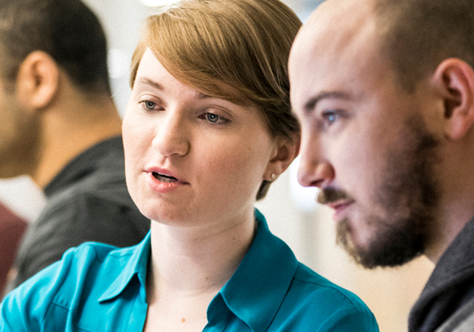
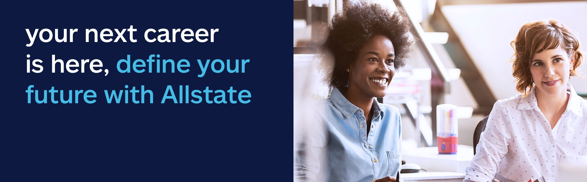
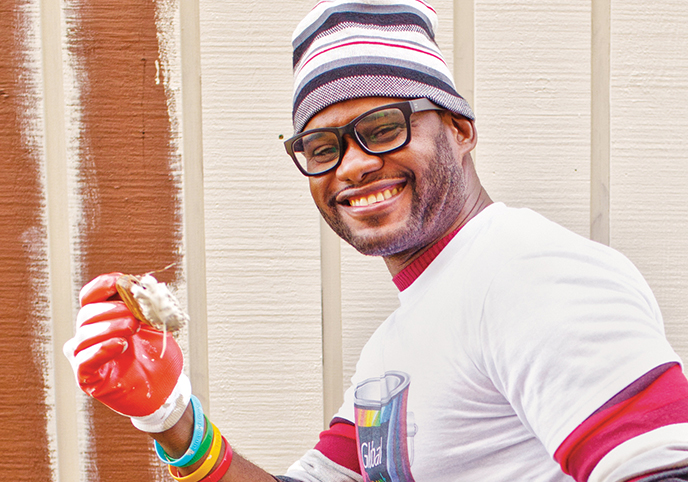
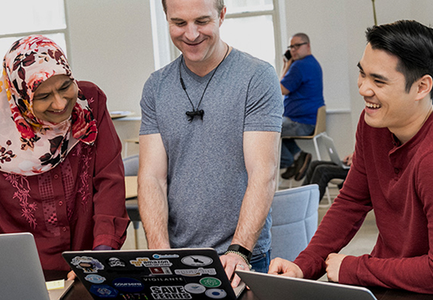
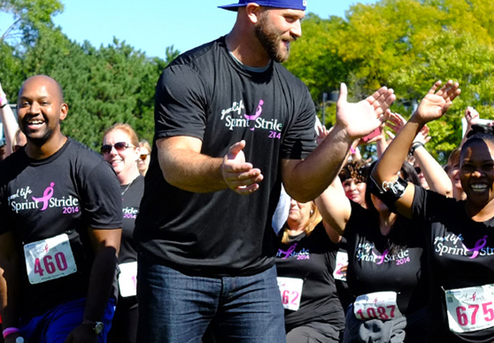
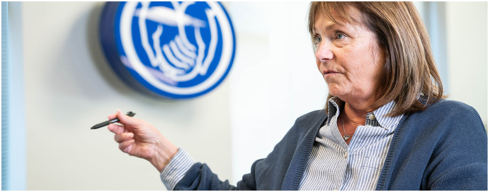
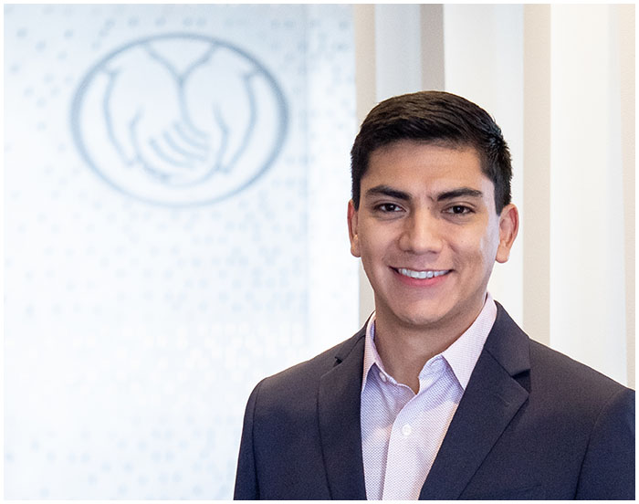

Good Work
Allstate believes good work happens when people put their passions, plans and potential to use and develop them, both on the job and in life.

Allstate values people's differing knowledge, backgrounds and viewpoints, and says it is working to build an environment where each person can follow their purpose and do their best.

Allstate believes good work happens when people put their passions, plans and potential to use and develop them, both on the job and in life.

The company's support for employees often goes beyond the job. It helps them pursue their passions, strengths and personal goals, whether at work or in their free time.

Allstate provides ways for employees to get more involved. It encourages them to keep supporting causes they care about.

Allstate invites employees to bring their whole selves to work.
Visit Page — Explore Inclusive Diversity
The company is committed to recruiting Veteran candidates.
Visit Page — Veterans & Transitioning Military
Allstate describes a culture built to help people thrive.
Visit Page — Benefits for a Good LifeOpportunity is the defining feature of working at Allstate. Each day brings new ideas, challenges and rewards in every department, and it is a place to build a meaningful career at any level.
Its dynamic culture and its leaders' commitment to continuous learning mean employees may get chances to build skills, try new directions and shape a career path that suits their passion. Learn how you can help shape the future in these areas:




Employees are central to Allstate's success, so the company is committed to their professional growth and development. Each person's path differs, but everyone has the same opportunity to reach their career goals.

7 years with Allstate

7 years with Allstate

4 years with Allstate
Came through the Technology Leadership Development Program, a 3-year rotational program:

Employees are encouraged to volunteer and give back in whatever ways they can all year. Lisa enjoys serving the community and supporting causes that matter to her.

She is proud of having built Allstate's first Bilingual Unlicensed Service team during her first assignment as a leader. She sees it as a great opportunity for employees and a way to serve Spanish-speaking customers better.

Leaders recognise that the world is changing quickly and that people must adapt and learn new skills. Allstate is committed to helping employees keep developing and growing.
Meet our recruiters and teams at upcoming events.
View all future events